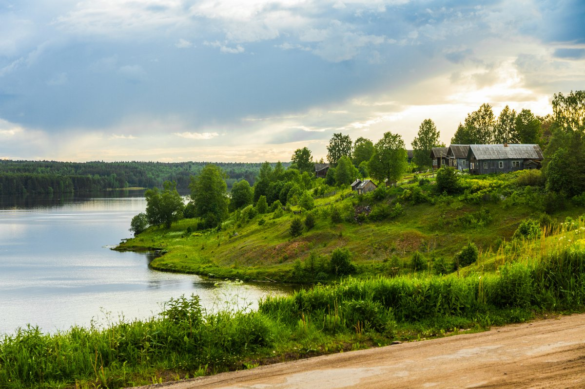
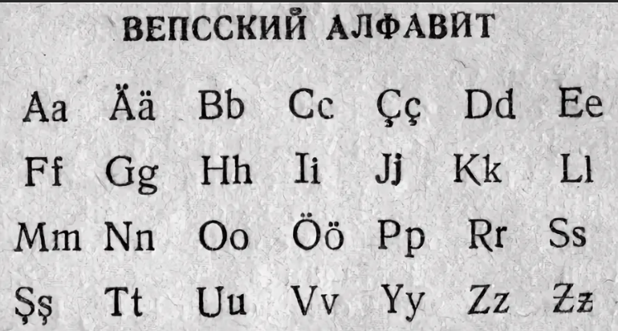
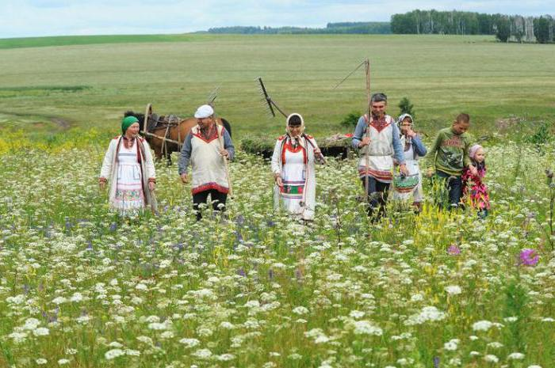
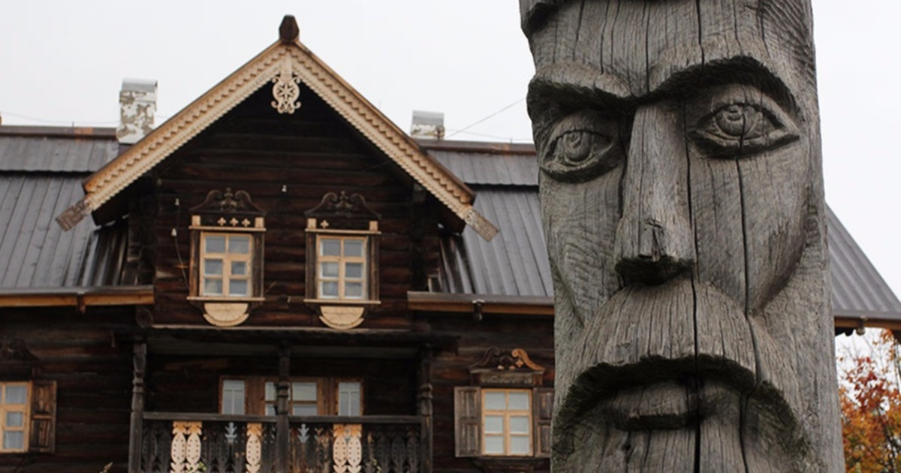
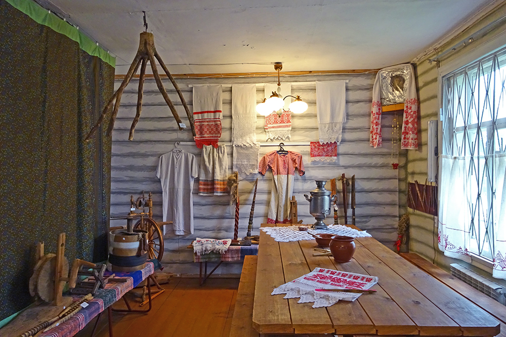

Это финно-угорский народ, говорящий на вепсском языке, как карелы на карельском. Это все, что точно известно. Остальное – предположения, о которых спорят этнографы.
Самоназвание народности – vepsä, vepsläižed, bepsä. В славянских летописях их называли «весь». Описывая поход князя Олега на Смоленск, летописец пишет, что правитель «взял с собой варягов, чудь, словен, мерю, весь и кривичей». Предполагают, что весь – это вепсы или одно из вепсских племен.
С вепсами отождествляют «народ бьярм», некогда населявший побережье Белого моря. Упоминание о бьярмах встречается у скандинавов. Неутомимый путешественник Оттар из Холугаланда во время странствий открыл богатую страну Биармию, населенную сильными колдунами, повелевающими стихиями. Об этом викинг писал своему нанимателю – королю Англии Альфреду Великому. Страна Биармия лежит к северу от Финляндии – государства финнов.
Предки вепсов жили на территории, простиравшейся от берегов Онежского озера на севере до Череповца на юге и Ладожского озера на востоке. По вепсским землям пролегал торговый путь «из варяг в греки». По речной системе вепсы мигрировали на северо-восток, заселяя север Новгородского княжества и Заволочье. Пришельцев назвали заволочской чудью. До 1917 года в документах Российской империи вепсы не выделялись в отдельную народность и обозначались как чудь.
Внешность вепсов
Слово «чудь» родственно словам «чудный, чужой, чуждый». Есть мнение, что «чудными или чужими» для местных племен были готы, а значит, вепсы – это готы. С такой лингвистической теорией не согласны историки. Первое упоминание вепсов появилось в VI веке в работе остготского историка Иордана, посвященной деяниям готов. Иордан перечисляет племена, которые покорил король остготов Германарих в IV веке. В числе прочих – Vas, Vasina. Эти названия близки к «весь» и самоназванию «вепсы».
Второе объяснение термина касается «чудной» внешности чуди белоглазой, как называли заволочских чудинов. Они казались непривычными местным жителям. Чудь белоглазую ассоциируют со скандинавскими гномами, европейскими фейри и эльфами. Чудины занималась охотой, рыболовством и земледелием. Слыли искусными мастерами в работе с металлами.
Первые антропологические описания внешности вепсов предоставил финский врач и этнограф Элиас Лённрот в 1842 году, а затем русский этнограф Владимир Майнов в 1870-м. Описание последнего более понятно, поскольку ученый сравнивал вепсов с русскими, выделяя отличия:
круглая форма черепа;
раскосые светлые глаза (серые, голубые);
ярко выраженные скулы;
широкий курносый нос, немного сплющенный;
красивые дугообразные брови;
маленький четко очерченный рот;
цвет бороды на 2–3 тона светлее волос на голове;
рост выше среднего: 1,69 м для мужчин и 1,62 м для женщин.
Не забыл Майнов и проблему белых глаз. Этнограф писал, что белыми они казались живущим рядом племенам коми, у которых глаза черного или карего цвета. У финских саамов, соседствующих с вепсами, глаза зеленого или темно-серого цвета. Соответственно, саамам вепсы не казались «чудными».
Особенности национального костюма
Женская одежда состоит из рубахи и юбки. Верх юбки дополняет широкая цветная кайма. Подол подвязывали. Поверх юбки хозяйка надевала передник, а голову обвязывала платком.
Мужской национальный костюм – рубаха-косоворотка и полосатые льняные штаны. Дополняют его плетенный пояс, картуз и сапоги. В древности вепсы плели лапти из бересты. Зимний наряд дополняли кафтаном или тулупом. Летнюю одежду шили из холста, зимнюю – из шерстяных тканей.
Узор по воротнику и краю одежды вышивали красной нитью. Красный цвет символизирует жизнь и солнце. Вышивка рассматривалась как оберег, обращение к духам за защитой, удачей, здоровьем. Женщины вышивали растительные орнаменты, птиц и солярные символы. Дополняли наряд стеклянными бусами, кольцами и серьгами.
Происхождение и история этноса
Древние вепсы жили в долинах рек Суда и Шексна, на берегах озера Белое и на северном побережье Онежского озера задолго до прихода туда финнов. Теория миграции племен гласит, что финны появились здесь около 1000 года до н. э. Финский народный эпос «Калевала» зародился 2500–3000 лет назад, а так как в мифологии вепсов нет элементов «Калевалы», считают, что они заселили местность раньше финнов, сформировав собственный пантеон богов и мифологию.
В I–II тысячелетии в межозерье пришли племена славян, в том числе новгородцы. Они захватили часть вепсских земель, начав эпоху ассимиляции коренных народов. Основными источниками сведений об этой эпохе служат древнерусские летописи.
В описаниях историков XX века вепсы, как и другие народы Русского Севера, не имели государственности, но эта точка зрения подвергается сомнению. Археологические раскопки древних могильников свидетельствуют о развитии ремесел: кузнечного и ювелирного дела, художественной обработки дерева и кости. Косвенно уровень развития этноса подтверждается рассказом викинга Оттара о богатой Биармии и легендами о кузнечных навыках чуди белоглазой. Малочисленные народы Волжского торгового пути могли иметь государственное устройство, но сведения о нем не сохранились из-за отсутствия собственной летописной истории.
Письменность вепсов создана в 30-х годах XX века в СССР. Вепсский алфавит разработали на основе латиницы, составили учебники, начали выпускать книги на вепсском. В 2007-м в алфавит добавили дополнительные диакритические знаки. В этом форме письменность используется по сей день.
Политика ликвидации неперспективных деревень, начатая в 1960-х годах, отрицательно сказалась на развитии коренных языков. С расселением малых поселений коренные жители ассимилировались, смешавшись с представителями других этносов в городах и поселках городского типа. Они массово перешли на русский язык.
Сегодня на вепсском говорят только люди старшего поколения. Поэтому язык относится к вымирающим и таким, которые могут исчезнуть в течение 100–150 лет, как язык народности ижора, на котором в XXI веке говорят от 500 до 1300 человек.
Место обитания
Современные вепсы живут в Восточной Карелии, на территории бывшей Вепсской национальной волости, в Ленинградской области и Вологодской. По данным переписи населения за 2010 год, всего в России живет 5936 вепсов.
Численность жителей вепсской национальности в:
Карелии – 3423;
Ленинградской области – 1380;
Вологодской – 412;
Санкт-Петербурге – 318;
Мурманской области – 128;
Кемеровской – 83.

Вепсская национальная волость существовала как автономия в составе Республики Карелия с 1994 по 2004 год. Ее создавали для «развития культуры и сохранения традиций» на территории Прионежского района. Включили в состав 13 населенных пунктов. Разработали флаг, ввели в школах преподавание вепсского языка.
Вепсский язык

Относится к финской языковой группе уральских языков и является самым восточным из них. Вепсский язык делят на 3 диалекта: северный, центральный и южный. На северном говорят в Карелии и некоторых деревнях Ленинградской области. На центральном – в Лодейнопольском районе, на южном – в Бокситогорском районе той же области.
Так как до 1917 года вепсов не отделяли от чуди, то вепсский язык среди других уральских языков был признан одним из последних.
Вепсские имена и фамилии – это русские имена с измененным по правилам вепсского языка произношением. Григорий – Grigoi, Макар – Makoi, Никита – Mikit, Валентина – Val'oi, Ирина – Iroi.
Образ жизни и религия
Предки вепсов были рыболовами, охотниками и собирателями. Они строили дома-землянки на берегах рек и озер. Внутри находились спальные места. Когда племена перешли к оседлой жизни, стали строить дома срубного типа. Внутри делали очаг для приготовления пищи, оборудовали места для сна и ремесел. Традиционными занятиями стали земледелие, скотоводство, рыболовство.

Коренная религия вепсов – шаманизм и анимизм. Проявляется в вере в одушевленность животных, растений, камней, предметов быта. Главные духи населяли лес, реку. Еще вепсы поклонялись богине весны и плодородия, богу грома и молний. Верили, что после смерти душа продолжает жить так же, как и при жизни, поэтому хоронили умерших в курганах, по форме и размерам напоминавших обычное жилище.
Вепсских шаманов, как и финских, называли ноидами. Они выступали в роли целителей и защитников от злых духов. Ноид призывал на помощь благожелательных духов и совершал путешествия между мирами, посещая верхний и нижний миры. До Второй мировой войны ноидами были только мужчины.

Контакты со славянами привели к распространению православной веры среди коренных народов. Поэтому официальная религия – православие. На бытовом уровне она сочетается с верой в домашних духов: домового, гуменника, банника.
Традиционный дом вепсов
У входа в избу обязательно делали порог и крыльцо. Под крышей крыльца летом сушили травы, устраивали место для работы на свежем воздухе. Внутри помещение делили на две части. В одной размещали печь. Здесь готовили еду для семьи, отдыхали, сушили одежду. По поверьям, под печью живет вепсский домовой – пертигенд. Во второй половине дома обустраивали спальные места. В женской половине ставили ткацкий станок, размещали сундук с одеждой и ценностями.

Традиционная кухня
Вепсские племена эпохи палеолита, строившие землянки на берегах рек, ловили рыбу. Добычу вялили, сушили, варили супы. Когда поселились на берегах Онежского озера, вепсы стали оседлым народом, занялись земледелием и скотоводством. Смена образа жизни внесла коррективы в питание людей.
Из злаков начали выращивать рожь. Ржаной хлеб стал главным продуктом на вепсском столе. Из ржаного теста готовили пироги с разномастными начинками – калитки, похожие формой на ватрушку. В древности калитки готовили из ячневой крупы или перловой. Современные делают с более привычными начинками: отварными яйцами с луком, картофелем, рыбой. Хлебный рацион дополняли оладьи из овсяной муки. Их подавали с лесными ягодами, творогом, грибами.
Мяса на стол попадало мало. Чтобы содержать домашних животных нужно много корма, но на Севере с этим проблема. В хозяйстве в среднем были 2–3 коровы, несколько овец и лошадь. Поэтому мясные блюда появлялись в рационе только после забоя скота осенью. Излишки солили или вялили. Хранили вяленое мясо на чердаке.
Посуду вепсы делали из дерева: кувшины, плошки. Деревянный кувшин – предок современного термоса. Он удерживает температуру напитка длительное время. Холодный квас останется прохладным, а горячий травяной отвар не остынет до конца дня.
Культура
Финско-эстонский эпос «Калевала» вдохновил Джона Толкина на создание «Сильмариллиона» и «Властелина колец». По сравнению с «Калевалой» кажется, что у вепсов нет эпоса, оставившего след в мировой культуре, но чудь белоглазая породила целый пласт мифов и легенд, связанных с подземным народом.
Мамин-Сибиряк писал, что все рудники Урала и горные заводы построены на месте древних чудских разработок. Сказ Павла Бажова о хозяйке Медной горы – один из самых известных и любимых российскими детьми. Хозяйка – владычица недр земных и покровительница рудокопов.
Вепсские праздники
Обращение вепсов в православие дало толчок к объединению язычества и христианства. Основная группа праздников – аграрные. Оседлые земледельцы праздновали дни солнцестояний и равноденствий, пробуждение природы, сбор урожая.
Особая категория – «заветные праздники». Их устанавливали в честь обещания, данного божеству. Сталкиваясь с природными бедствиями, такими как падеж скота или неурожай, люди испытывали потребность в заступничестве, обещая богам что-то взамен. Чтобы предотвратить проблему в будущем, строго соблюдали завет. Например, вепсы веками приносили жертвы волкам и медведям, чтобы хищники скот не трогали.
Предки вепсов выбирали для подношения духам природы необычные места: камни особой формы, рощи. У северных вепсов популярностью пользуются придорожные кресты как места принесения жертв духам природы. Им оставляют расшитые полотенца, деньги, продукты животноводства.
Центральные и южные вепсы почитают места силы наравне с церквями и часовнями, а иногда и объединяют их. Например, в деревне Холодный Ручей есть камень с выемкой в виде стоящего человека. Если присмотреться, то видны ряса и крест. По легенде, камень стоит у пещеры, в которой жил Николай Угодник. Святой пользовался этим камнем как алтарем. Местные жители приносят к нему масло, яйца, полотенца, свечи.
Традиции и обычаи
Вера в духов – основа для обрядов и традиций. Много ритуалов связано с новым жильем. Для счастливой жизни брали горшок углей из старого очага, чтобы зажечь ими огонь в новом доме. Первым в дом пускали кошку и оставляли ночевать. Верили, что без кошки умрет тот, кто в жилище первым ступит. После животного входил хозяин, а за ним хозяйка с петухом. Кукареканье расценивали, как счастливую примету, молчание – как признак будущих несчастий.
Одежда и еда тоже приобретали обережные функции. Рубаха матери или отца успокаивала ребенка и одновременно усиливала связь между поколениями. Новобрачные для защиты от порчи подпоясывались рыбацкой сетью, в которую заворачивали щучью челюсть. Для счастья молодых на стол подавали рыбные пироги.
Известный пример вепсского оберега встречается в сказке «Крошечка-Хаврошечка». Это кукла, которая оберегала главную героиню, давала советы и наставления. Ее создает девушка на выданье из натуральных материалов, чтобы счастливо выйти замуж. При рождении ребенка созданная матерью куколка укладывается младенцу в кроватку или подвешивается над ней. Называется она «Капусткой» за пышную юбку и формы. Подрастая, девочка сохраняет обережную куклу в сундуке с приданным.
Если кукла изнашивалась, ее сжигали, поблагодарив за работу. Остальные передавались из поколения в поколение.
Много традиций связаны с лесом. Отправляясь на охоту или за грибами, ягодами, вепсы приносили жертвы лесным духам. Того, кто не поприветствовал хозяина леса, лесной дух мог завести в чащу. Люди жертвовали зерна овса, медные монеты. В лесу не разрешалось шуметь, ругаться, губить живых существ и растения без надобности. Нарушитель мог никогда не выйти из чащи.
Древние народы, как и люди, рождаются, развиваются и вымирают. К XXI веку вепсы почти полностью ассимилировались с русскими. Современный быт вепса ничем не отличается от бытовых условий представителей других народностей. Поэтому о традициях и вепсском фольклоре можно узнать только из работ ученых-этнографов или национальных фестивалей. Ежегодно в селе Винницы Ленинградской области проходит фестиваль «Дерево жизни», где продают изделия народных промыслов, проводят конкурсы национальных костюмов. Сопровождается фестиваль выступлениями коллективов художественной самодеятельности.


 С вепсами отождествляют «народ бьярм», некогда населявший побережье Белого моря. Упоминание о бьярмах встречается у скандинавов. Неутомимый путешественник Оттар из Холугаланда во время странствий открыл богатую страну Биармию, населенную сильными колдунами, повелевающими стихиями. Об этом викинг писал своему нанимателю – королю Англии Альфреду Великому. Страна Биармия лежит к северу от Финляндии – государства финнов.
Предки вепсов жили на территории, простиравшейся от берегов Онежского озера на севере до Череповца на юге и Ладожского озера на востоке. По вепсским землям пролегал торговый путь «из варяг в греки». По речной системе вепсы мигрировали на северо-восток, заселяя север Новгородского княжества и Заволочье. Пришельцев назвали заволочской чудью. До 1917 года в документах Российской империи вепсы не выделялись в отдельную народность и обозначались как чудь.
С вепсами отождествляют «народ бьярм», некогда населявший побережье Белого моря. Упоминание о бьярмах встречается у скандинавов. Неутомимый путешественник Оттар из Холугаланда во время странствий открыл богатую страну Биармию, населенную сильными колдунами, повелевающими стихиями. Об этом викинг писал своему нанимателю – королю Англии Альфреду Великому. Страна Биармия лежит к северу от Финляндии – государства финнов.
Предки вепсов жили на территории, простиравшейся от берегов Онежского озера на севере до Череповца на юге и Ладожского озера на востоке. По вепсским землям пролегал торговый путь «из варяг в греки». По речной системе вепсы мигрировали на северо-восток, заселяя север Новгородского княжества и Заволочье. Пришельцев назвали заволочской чудью. До 1917 года в документах Российской империи вепсы не выделялись в отдельную народность и обозначались как чудь. Второе объяснение термина касается «чудной» внешности чуди белоглазой, как называли заволочских чудинов. Они казались непривычными местным жителям. Чудь белоглазую ассоциируют со скандинавскими гномами, европейскими фейри и эльфами. Чудины занималась охотой, рыболовством и земледелием. Слыли искусными мастерами в работе с металлами.
Первые антропологические описания внешности вепсов предоставил финский врач и этнограф Элиас Лённрот в 1842 году, а затем русский этнограф Владимир Майнов в 1870-м. Описание последнего более понятно, поскольку ученый сравнивал вепсов с русскими, выделяя отличия:
Второе объяснение термина касается «чудной» внешности чуди белоглазой, как называли заволочских чудинов. Они казались непривычными местным жителям. Чудь белоглазую ассоциируют со скандинавскими гномами, европейскими фейри и эльфами. Чудины занималась охотой, рыболовством и земледелием. Слыли искусными мастерами в работе с металлами.
Первые антропологические описания внешности вепсов предоставил финский врач и этнограф Элиас Лённрот в 1842 году, а затем русский этнограф Владимир Майнов в 1870-м. Описание последнего более понятно, поскольку ученый сравнивал вепсов с русскими, выделяя отличия:
 Не забыл Майнов и проблему белых глаз. Этнограф писал, что белыми они казались живущим рядом племенам коми, у которых глаза черного или карего цвета. У финских саамов, соседствующих с вепсами, глаза зеленого или темно-серого цвета. Соответственно, саамам вепсы не казались «чудными».
Не забыл Майнов и проблему белых глаз. Этнограф писал, что белыми они казались живущим рядом племенам коми, у которых глаза черного или карего цвета. У финских саамов, соседствующих с вепсами, глаза зеленого или темно-серого цвета. Соответственно, саамам вепсы не казались «чудными». Мужской национальный костюм – рубаха-косоворотка и полосатые льняные штаны. Дополняют его плетенный пояс, картуз и сапоги. В древности вепсы плели лапти из бересты. Зимний наряд дополняли кафтаном или тулупом. Летнюю одежду шили из холста, зимнюю – из шерстяных тканей.
Мужской национальный костюм – рубаха-косоворотка и полосатые льняные штаны. Дополняют его плетенный пояс, картуз и сапоги. В древности вепсы плели лапти из бересты. Зимний наряд дополняли кафтаном или тулупом. Летнюю одежду шили из холста, зимнюю – из шерстяных тканей.
 Узор по воротнику и краю одежды вышивали красной нитью. Красный цвет символизирует жизнь и солнце. Вышивка рассматривалась как оберег, обращение к духам за защитой, удачей, здоровьем. Женщины вышивали растительные орнаменты, птиц и солярные символы. Дополняли наряд стеклянными бусами, кольцами и серьгами.
Узор по воротнику и краю одежды вышивали красной нитью. Красный цвет символизирует жизнь и солнце. Вышивка рассматривалась как оберег, обращение к духам за защитой, удачей, здоровьем. Женщины вышивали растительные орнаменты, птиц и солярные символы. Дополняли наряд стеклянными бусами, кольцами и серьгами. В описаниях историков XX века вепсы, как и другие народы Русского Севера, не имели государственности, но эта точка зрения подвергается сомнению. Археологические раскопки древних могильников свидетельствуют о развитии ремесел: кузнечного и ювелирного дела, художественной обработки дерева и кости. Косвенно уровень развития этноса подтверждается рассказом викинга Оттара о богатой Биармии и легендами о кузнечных навыках чуди белоглазой. Малочисленные народы Волжского торгового пути могли иметь государственное устройство, но сведения о нем не сохранились из-за отсутствия собственной летописной истории.
Письменность вепсов создана в 30-х годах XX века в СССР. Вепсский алфавит разработали на основе латиницы, составили учебники, начали выпускать книги на вепсском. В 2007-м в алфавит добавили дополнительные диакритические знаки. В этом форме письменность используется по сей день.
Политика ликвидации неперспективных деревень, начатая в 1960-х годах, отрицательно сказалась на развитии коренных языков. С расселением малых поселений коренные жители ассимилировались, смешавшись с представителями других этносов в городах и поселках городского типа. Они массово перешли на русский язык.
Сегодня на вепсском говорят только люди старшего поколения. Поэтому язык относится к вымирающим и таким, которые могут исчезнуть в течение 100–150 лет, как язык народности ижора, на котором в XXI веке говорят от 500 до 1300 человек.
В описаниях историков XX века вепсы, как и другие народы Русского Севера, не имели государственности, но эта точка зрения подвергается сомнению. Археологические раскопки древних могильников свидетельствуют о развитии ремесел: кузнечного и ювелирного дела, художественной обработки дерева и кости. Косвенно уровень развития этноса подтверждается рассказом викинга Оттара о богатой Биармии и легендами о кузнечных навыках чуди белоглазой. Малочисленные народы Волжского торгового пути могли иметь государственное устройство, но сведения о нем не сохранились из-за отсутствия собственной летописной истории.
Письменность вепсов создана в 30-х годах XX века в СССР. Вепсский алфавит разработали на основе латиницы, составили учебники, начали выпускать книги на вепсском. В 2007-м в алфавит добавили дополнительные диакритические знаки. В этом форме письменность используется по сей день.
Политика ликвидации неперспективных деревень, начатая в 1960-х годах, отрицательно сказалась на развитии коренных языков. С расселением малых поселений коренные жители ассимилировались, смешавшись с представителями других этносов в городах и поселках городского типа. Они массово перешли на русский язык.
Сегодня на вепсском говорят только люди старшего поколения. Поэтому язык относится к вымирающим и таким, которые могут исчезнуть в течение 100–150 лет, как язык народности ижора, на котором в XXI веке говорят от 500 до 1300 человек. Мяса на стол попадало мало. Чтобы содержать домашних животных нужно много корма, но на Севере с этим проблема. В хозяйстве в среднем были 2–3 коровы, несколько овец и лошадь. Поэтому мясные блюда появлялись в рационе только после забоя скота осенью. Излишки солили или вялили. Хранили вяленое мясо на чердаке.
Посуду вепсы делали из дерева: кувшины, плошки. Деревянный кувшин – предок современного термоса. Он удерживает температуру напитка длительное время. Холодный квас останется прохладным, а горячий травяной отвар не остынет до конца дня.
Мяса на стол попадало мало. Чтобы содержать домашних животных нужно много корма, но на Севере с этим проблема. В хозяйстве в среднем были 2–3 коровы, несколько овец и лошадь. Поэтому мясные блюда появлялись в рационе только после забоя скота осенью. Излишки солили или вялили. Хранили вяленое мясо на чердаке.
Посуду вепсы делали из дерева: кувшины, плошки. Деревянный кувшин – предок современного термоса. Он удерживает температуру напитка длительное время. Холодный квас останется прохладным, а горячий травяной отвар не остынет до конца дня.


 Особая категория – «заветные праздники». Их устанавливали в честь обещания, данного божеству. Сталкиваясь с природными бедствиями, такими как падеж скота или неурожай, люди испытывали потребность в заступничестве, обещая богам что-то взамен. Чтобы предотвратить проблему в будущем, строго соблюдали завет. Например, вепсы веками приносили жертвы волкам и медведям, чтобы хищники скот не трогали.
Предки вепсов выбирали для подношения духам природы необычные места: камни особой формы, рощи. У северных вепсов популярностью пользуются придорожные кресты как места принесения жертв духам природы. Им оставляют расшитые полотенца, деньги, продукты животноводства.
Особая категория – «заветные праздники». Их устанавливали в честь обещания, данного божеству. Сталкиваясь с природными бедствиями, такими как падеж скота или неурожай, люди испытывали потребность в заступничестве, обещая богам что-то взамен. Чтобы предотвратить проблему в будущем, строго соблюдали завет. Например, вепсы веками приносили жертвы волкам и медведям, чтобы хищники скот не трогали.
Предки вепсов выбирали для подношения духам природы необычные места: камни особой формы, рощи. У северных вепсов популярностью пользуются придорожные кресты как места принесения жертв духам природы. Им оставляют расшитые полотенца, деньги, продукты животноводства.
 Центральные и южные вепсы почитают места силы наравне с церквями и часовнями, а иногда и объединяют их. Например, в деревне Холодный Ручей есть камень с выемкой в виде стоящего человека. Если присмотреться, то видны ряса и крест. По легенде, камень стоит у пещеры, в которой жил Николай Угодник. Святой пользовался этим камнем как алтарем. Местные жители приносят к нему масло, яйца, полотенца, свечи.
Центральные и южные вепсы почитают места силы наравне с церквями и часовнями, а иногда и объединяют их. Например, в деревне Холодный Ручей есть камень с выемкой в виде стоящего человека. Если присмотреться, то видны ряса и крест. По легенде, камень стоит у пещеры, в которой жил Николай Угодник. Святой пользовался этим камнем как алтарем. Местные жители приносят к нему масло, яйца, полотенца, свечи. Если кукла изнашивалась, ее сжигали, поблагодарив за работу. Остальные передавались из поколения в поколение.
Много традиций связаны с лесом. Отправляясь на охоту или за грибами, ягодами, вепсы приносили жертвы лесным духам. Того, кто не поприветствовал хозяина леса, лесной дух мог завести в чащу. Люди жертвовали зерна овса, медные монеты. В лесу не разрешалось шуметь, ругаться, губить живых существ и растения без надобности. Нарушитель мог никогда не выйти из чащи.
Древние народы, как и люди, рождаются, развиваются и вымирают. К XXI веку вепсы почти полностью ассимилировались с русскими. Современный быт вепса ничем не отличается от бытовых условий представителей других народностей. Поэтому о традициях и вепсском фольклоре можно узнать только из работ ученых-этнографов или национальных фестивалей. Ежегодно в селе Винницы Ленинградской области проходит фестиваль «Дерево жизни», где продают изделия народных промыслов, проводят конкурсы национальных костюмов. Сопровождается фестиваль выступлениями коллективов художественной самодеятельности.
Если кукла изнашивалась, ее сжигали, поблагодарив за работу. Остальные передавались из поколения в поколение.
Много традиций связаны с лесом. Отправляясь на охоту или за грибами, ягодами, вепсы приносили жертвы лесным духам. Того, кто не поприветствовал хозяина леса, лесной дух мог завести в чащу. Люди жертвовали зерна овса, медные монеты. В лесу не разрешалось шуметь, ругаться, губить живых существ и растения без надобности. Нарушитель мог никогда не выйти из чащи.
Древние народы, как и люди, рождаются, развиваются и вымирают. К XXI веку вепсы почти полностью ассимилировались с русскими. Современный быт вепса ничем не отличается от бытовых условий представителей других народностей. Поэтому о традициях и вепсском фольклоре можно узнать только из работ ученых-этнографов или национальных фестивалей. Ежегодно в селе Винницы Ленинградской области проходит фестиваль «Дерево жизни», где продают изделия народных промыслов, проводят конкурсы национальных костюмов. Сопровождается фестиваль выступлениями коллективов художественной самодеятельности.